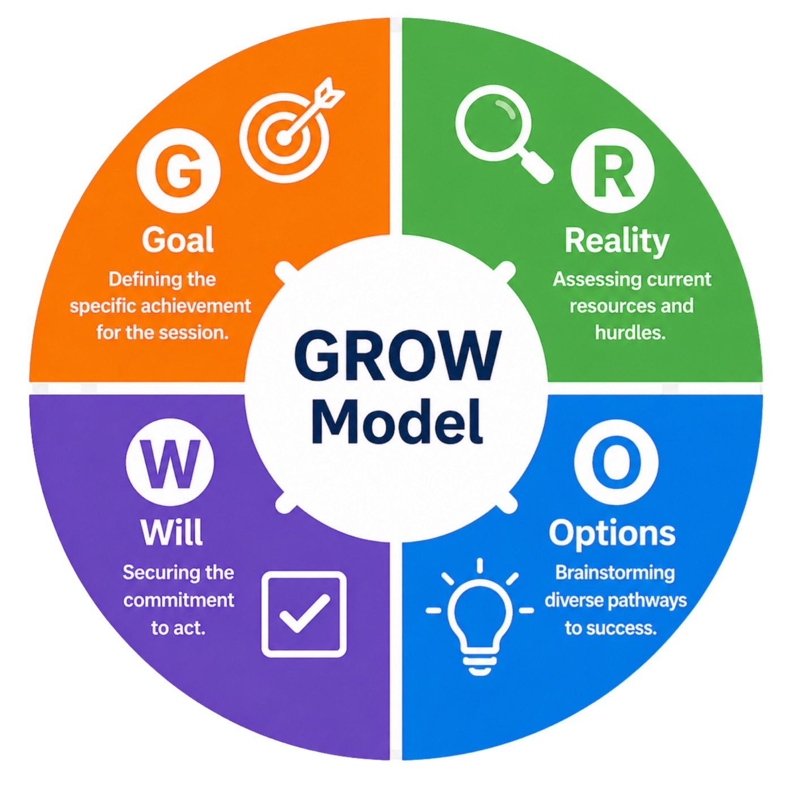
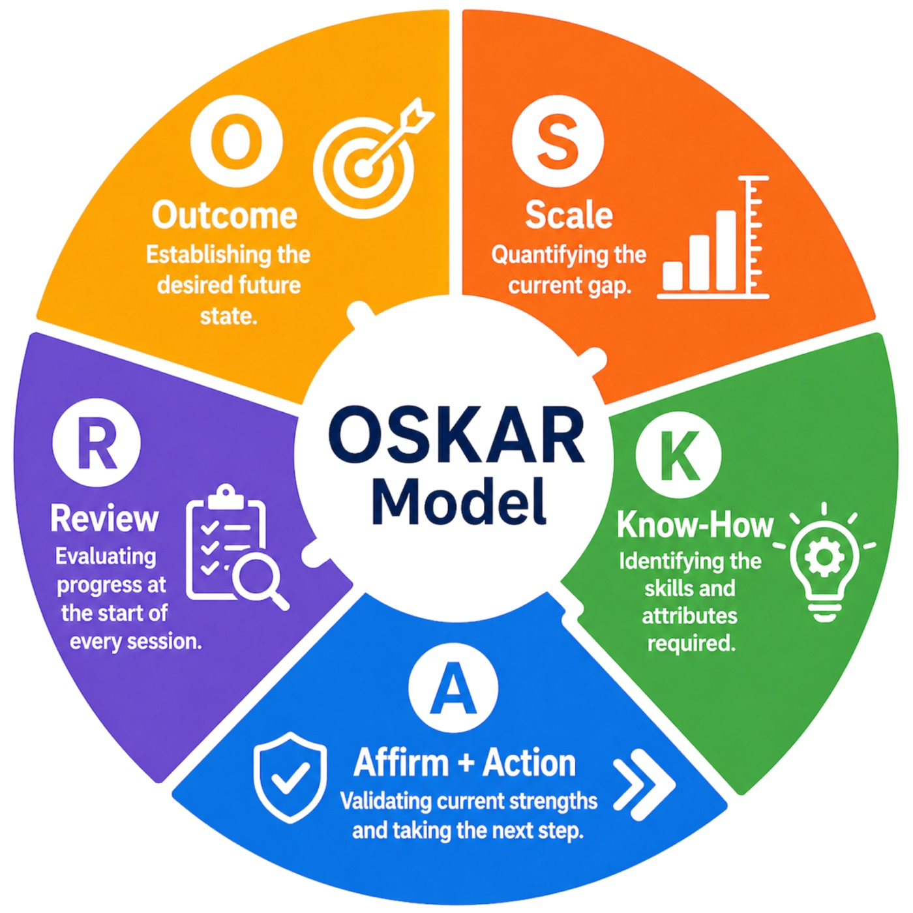
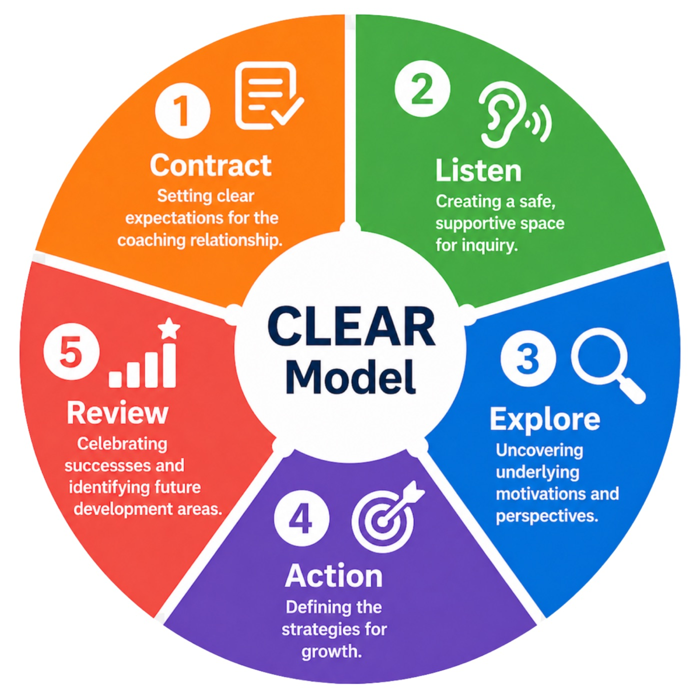
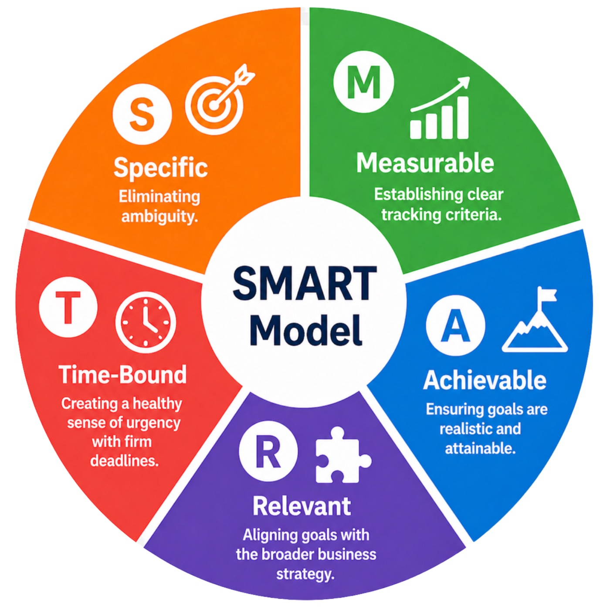

We provide specialized workplace learning consultancy to help organizations bridge the gap between theoretical knowledge and practical, high-impact application. By crafting bespoke training strategies and human-centric development programmes, we empower teams to cultivate the "soft power" skills and cognitive resilience necessary for modern business success.
Our focus is on transforming workplace culture through adaptive leadership and psychological safety, ensuring long-term growth and a measurable performance ecosystem — identifying the friction points where knowledge fails to translate into action. By mastering the ability to design interventions within the actual flow of work, you move beyond "content delivery" and become a vital partner in your organization's strategic growth.
The outcomes of our consultancy are designed to deliver both immediate behavioral shifts and long-term organizational growth. By implementing these strategies, your organization can expect:
Teams develop high-level emotional intelligence, adaptive leadership, and refined communication skills that improve daily collaboration.
Employees gain the mental agility and psychological safety needed to navigate uncertainty and the evolving impact of AI on the workforce.
Through the S.M.A.R.T. Framework, learning translates directly into measurable productivity and high-impact workplace results.
A shift toward a high-performance culture where conflict is mastered and negotiation becomes a tool for win-win alignment rather than friction.
Using experiential, hands-on methods ensures that training isn't just a "one-off" event but leads to lasting professional mastery.
We integrate four powerhouse coaching and development frameworks to create a comprehensive leadership toolkit. By combining these proven methodologies, the programme ensures a 360-degree approach to problem-solving, performance tracking, and goal attainment.

Methodology IThe Foundation of Goal-Directed Action — the gold standard for structured coaching, used to clarify aspirations and establish a concrete path toward achievement.

Methodology IISolution-Focused Coaching — a framework that shifts the focus away from problems and toward building on existing strengths and successes.

Methodology IIITransformational Leadership Coaching — designed to foster deep engagement and psychological safety, ensuring sessions are transformative rather than transactional.

Methodology IVThe Science of Precision — the essential foundation for execution, ensuring that every strategic insight is translated into a clear, trackable, and high-impact objective.
To build the fundamental "Manager's Toolkit" and master behavioral intelligence as you step into your first leadership roles.
To refine adaptive leadership, psychological safety, and strategic influence at the C-suite and senior VP level.
To improve collaboration, resolve friction through conflict mastery, and align on shared goals across silos and departments.
Specifically those looking to future-proof their roles and maintain relevance in the age of AI through soft-power skill development.
We integrate the GROW, OSKAR, CLEAR, and SMART models into a single, cohesive framework for performance.
Led by practitioners with over 20 years of experience in communication, editorial leadership, and business management.
We are certified experts in MBTI, DISC, Enneagram, and Lumina Spark, allowing us to profile and pivot our approach based on your team's unique DNA.
As a recognized "Top Voice" in Workplace Well-being, our consultancy focuses on the intersection of mental resilience and high-performance output.
Partner with our experts to translate strategy into measurable behavioral change. Let's design the learning organisation your business needs to thrive in the next decade.
Book a Consultation